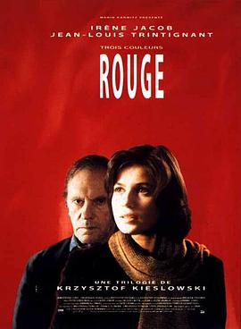

蓝白红三部曲之红 / Trois couleurs: Rouge
又名：红 / 红色情深(台) / 三色之红色篇 / 三色：红 / 红色 / Three Colors: Red
2021北影节 heal me
作品信息
| 导演 | 克日什托夫·基耶斯洛夫斯基 |
| 编剧 | 克日什托夫·基耶斯洛夫斯基 / 克日什托夫·皮耶谢维奇 / 阿格涅丝卡·霍兰 / 爱德华·泽布罗夫斯基 / 爱德华·克罗西斯基 |
| 主演 | 伊莲娜·雅各布 / 让-路易·特兰蒂尼昂 / 弗雷德里奎·费德 / 让-皮耶·罗利特 / 塞缪尔·勒·比汉 / 马里恩·斯泰伦斯 / 特科·切里奥 / 伯纳德·埃斯卡隆 / 让·施莱格尔 / 埃尔兹别塔·亚辛斯卡 / 保罗·弗梅伦 / 让-马利·道纳斯 / 罗兰·凯里 / 朱丽叶·比诺什 / 贝努特·里格恩特 / 朱莉·德尔佩 / 齐伯尼·查马修瓦斯基 |
| 类型 | 剧情 / 爱情 / 悬疑 |
| 制片国家/地区 | 法国 / 波兰 / 瑞士 |
| 语言 | 法语 |
| 上映日期 | 1994-05-12(戛纳电影节) / 1994-05-27(波兰) / 1994-09-14(法国) |
| 片长 | 99分钟 |
| IMDb | tt0111495 |
最后一次看到是 2026-08-12T21:11:26+08:00 · 豆瓣原页